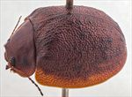
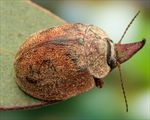
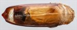
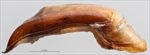
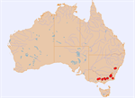

Click on images to enlarge
{kind=link}

Male, Rockton, S.E. New South Wales
{kind=link}

Male, Mt. Buller, Victoria
{kind=link}

Aedeagus, dorsal view (Blackheath, New South Wales)
{kind=link}

Aedeagus, lateral view (Blackheath, New South Wales)
{kind=link}

Distribution (pale-coloured circles indicate records obtained from iNaturalist)
Name
Trachymela latipes (Blackburn)
Reference specimen
2002-254a, Dinner Plain, eastern Victoria.
Adult Description
Length: ♂ (9.2)9.7–11.3 mm (n=25), ♀ 10.0–11.3 mm (n=11).
Colouration:
- Head: variable, uniformly mid-brown with black-tipped mandibles, lateral margin of clypeus narrowly black; antennomeres 1–4 light brown, 8–11 dark brown or (less commonly) black, intermediate segments grade between these shades.
- Pronotum: brown, concolorous with head, usually without dark markings but sometimes with two quite small, black, round maculae, one behind each eye.
- Scutellum: brown, concolorous with pronotum, usually broadly edged in a slightly darker shade of brown.
- Elytra: uniformly brown, concolorous with pronotum, small dark or black verrucae of approximately uniform size are almost always present, scattered lightly or moderately densely over discal area and not arranged in longitudinal series (except in Kangaroo Island specimens), rarely with darker colouring present also around anterior half of elytral suture, humeral callus concolorous with surrounding surface, rarely darker.
- Venter & Legs: venter dark brown to black, rarely much paler, with legs usually a slightly paler shade, inner surface of epipleura brown.
- Cuticular Wax: a sparse to moderate layer of uniform shade that can be from light grey to brown.
Morphology:
- Head: punctures relatively large (pd ≈ 2×ef) and quite evenly and densely distributed, rarely with some rugose interstices. Antennae moderately long (AL: ♂ 46–48% BL, ♀ 38–40% BL), filiform.
- Pronotum: evenly curved transversely over disc, then becoming explanate towards margins producing a broad shallow depression behind the outside edge of each eye, puncturation clearly impressed, quite evenly and densely distributed in discal area, becoming considerably coarser at lateral margins. Fine interstitial punctures are absent. Front margins join lateral margins in a very smoothly rounded right-angle, anterior half of lateral margin almost straight with posterior half then curving smoothly and gradually towards rear margin.
- Scutellum: unpunctured, with a surface that can be smooth and nitid or rough.
- Elytra: discal surface with a broad, transverse, shallow depression just in front of middle, punctures distinct and quite evenly distributed, the interstices forming a network of ridges that can include some quite prominent transverse ones, some to many small pimple-like raised verrucae are usually present, many with a central puncture, scattered over disc, most commonly in posterior half and in the area between scutellum and humeral callus, though may be inconspicuous if concolorous with surrounding surface, surface discontinuous (depressed) under humeral callus. Epipleura sometimes conspicuously explanate, their vertical extension considerable (HCE/PW = 0.39–0.42).
- Venter: prosternal process almost parallel-sided, lightly closed anteriorly, short setae present at rear of prosternal process, absent from mesoventrite, a single seta on anterior and median trochanter; front edge of metaventrite beveled, truncate; inner (horizontal) part of epipleura broad, forming a distinct ledge almost to apex, lacking setae; 1st tarsal segments on fore and mid legs in male very large and almost round.
Male Genitalia (Aedeagus):
- Dimensions: large (LPE = 44–47% BL).
- Dorsal view: shaft widest at base of central section then narrowing towards apex, initially very gradually then more noticeably from about 25% of distance from apex before the sides converge towards apex to form a blunt triangle, dorsal surface smoothly curved with dorso-median channel usually present but not clearly defined, dorsolateral channels present and quite well defined, tip triangular, ostium longer than broad.
- Lateral view: shaft with a noticeable curve near base of central section, then evenly and very slightly curved through most of length with curvature increasing close to apex, thinning towards apex over 20% of length, tip deflexed.
Immature Stages
Unknown.
Similar species
- Ta177: this very similar species differs in the much darker colouring of the elytral surface, the possession of dark black patches on the pronotum and by (usually) having the elytral verrucae arranged in longitudinal series. However, the aedeagus is almost identical to that of Ta68.
- Ta67: the distribution of this species broadly overlaps that of Ta68 and the two species are of a similar size. Ta68 may be distinguished by the rounder pronotal front angles, its broader body shape generally and the verrucae on the elytra usually not being clearly placed in longitudinal series.
Notes
- Taxonomy: identification as Trachymela latipes is by comparison with the type in the Natural History Museum, London (BMNH).
- Distribution & Abundance: Ta68 is abundant where it occurs. This is one of the very few species where males outnumber females in collections, with only 30% of 40 specimens examined being female (p < 0.02, exact binomial test).
- Host Associations: most specimens have been collected from Eucalyptus pauciflora (n=11), with E. viminalis (n=2), E. radiata (n=2), E. dives (n=1) and unidentified peppermints and smooth-barked eucalypts also recorded as hosts.
Copyright © 2026. All rights reserved.